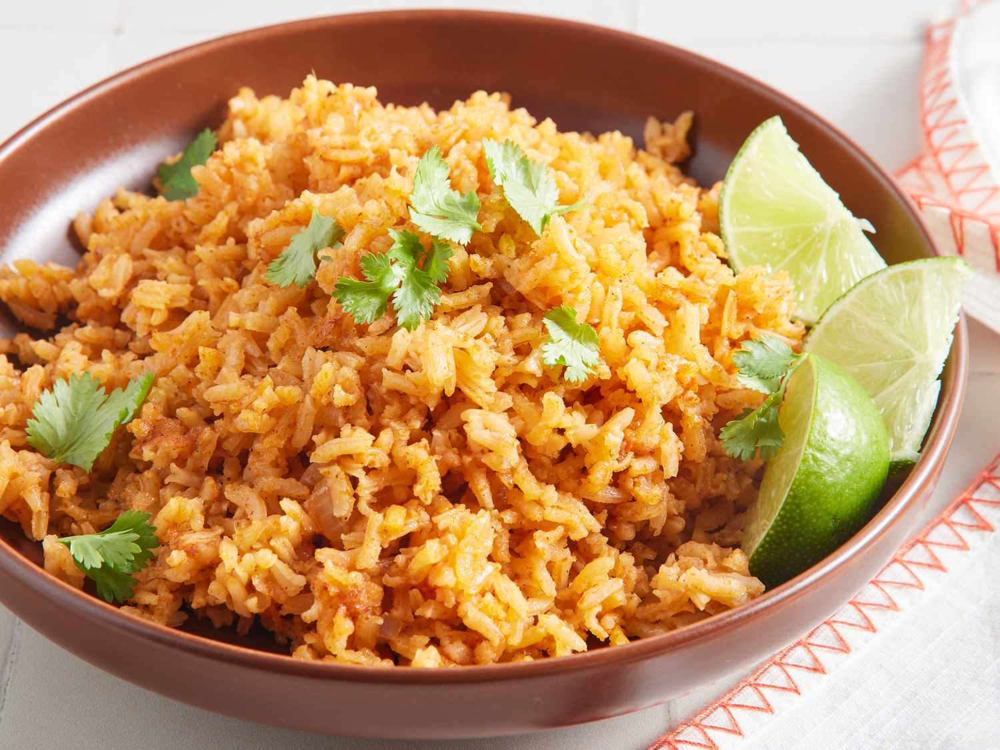

Mexican Rice

Description
This Mexican rice recipe makes a wonderful restaurant-style side dish for any Mexican dinner.
Ingredients
- 3 tablespoons vegetable oil
- 1 cup uncooked long-grain rice
- Garlic salt
- Ground cumin
- 1 chopped onion
- Chicken broth
- Tomato sauce
Steps
- Season the rice and cook in oil until puffed and golden
- Add the onion and cook until the onion is softened.
- Stir in the broth and tomato sauce, then bring to a boil
- Reduce to a simmer, cover, and cook for 20 more minutes
Back to Home